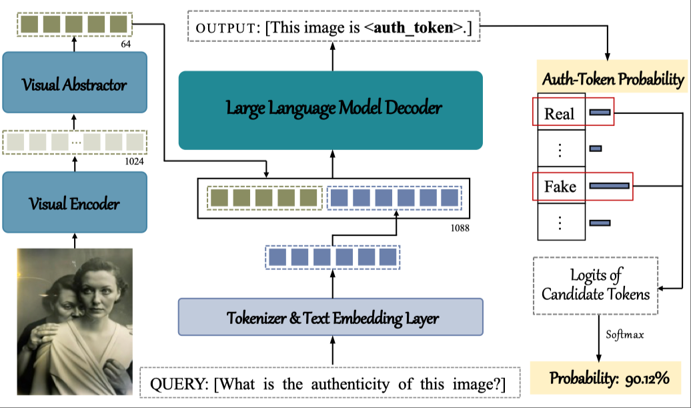

Hi there👋, I am Yixuan LI, currently a Research Fellow in the Department of Computer Science, City University of Hong Kong.
Previously I completed my PhD degree from City University of Hong Kong in July 2025, where I was fortunate to be advised by Prof. Shiqi Wang.
I also work closely with Prof. Weisi Lin and Prof. Anderson Rocha.
My research focuses on visual computing that prioritize human perception and trustworthiness, addressing challenges
in both algorithm development and deployment in the open world. This involves simulating the characteristics of human visual system, coping with the
ambiguity and subjectivity of human perception, and handling explainability therein.
Currently, my emphasis is on building responsible foundation models such as large multimodal models
and I am driven to investigate when they work or fail, adapt them to down-stream vision tasks, and ensure they serve real-world multimedia applications effectively.
My general research interests lie in the intersection of:
Computer Vision: Image Quality Assessment, Video Quality Assessment
Large Multimodal Models: Post-training, Visual Reasoning
I am always open to communication and collaboration with researchers in related fields. Feel free to reach out if
you are interested or have any questions.
2025 - now, City University of Hong Kong, Hong Kong SAR Research Fellow in the Department of Computer Science, working with Prof. Shiqi Wang
2024 - 2025, Nanyang Technological University, Singapore Visiting Researcher in College of Computing and Data Science, supervised by
Prof. Weisi Lin
Education
2021 - 2025, City University of Hong Kong, Hong Kong SAR PhD in Computer Science, supervised by Prof. Shiqi Wang
2018 - 2021, China University of Mining and Technology, Xuzhou China MEng in Electronic and Communication Engineering, supervised by Prof. Leida Li
2014 - 2018, Central South University, Changsha China BEng in Communication Engineering, supervised by Prof. Yan Tang
Research

Fakescope: Large multimodal expert model for transparent AI-generated image forensics Yixuan Li, Yu Tian, Yipo Huang, Wei Lu, Shiqi Wang✝, Weisi Lin, and Anderson Rocha ArXiv:2503.24267, Under review, 2025
FakeBench: Probing Explainable Fake Image Detection via Large Multimodal Models Yixuan Li, Xuelin Liu, Xiaoyang Wang, Bu Sung Lee, Shiqi Wang✝, Anderson Rocha, and Weisi Lin IEEE Transactions on Information Forensics and Security (IEEE TIFS), 2025
AI-generated Image Quality Assessment in Visual Communication Yu Tian*, Yixuan Li*, Baoliang Chen, Hanwei Zhu, Shiqi Wang✝, and Sam Kwong✝ Proceedings of the AAAI Conference on Artificial Intelligence (AAAI), 2025
Deep Shape-Texture Statistics for Completely Blind Image Quality Evaluation Yixuan Li, Peilin Chen, Hanwei Zhu, Keyan Ding, Prof. Leida Li, and Shiqi Wang✝, ACM Transactions on Multimedia Computing, Communications and Applications (ACM TOMM), 2024
Perceptual Quality Assessment of Face Video Compression: A benchmark and an Effective method Yixuan Li, Bolin Chen, Baoliang Chen, Meng Wang, and Shiqi Wang✝, ACM Transactions on Multimedia Computing, Communications and Applications (ACM TOMM), 2024
Yixuan Li, Xuelin Liu, Xiaoyang Wang, Bu Sung Lee, Shiqi Wang, Anderson Rocha, and Weisi Lin.
“Fakebench: Probing explainable fake image detection via large multimodal models.”
IEEE Transactions on Information Forensics and Security, 2025.
[IF: 8.0, Q1, Top 4% (9/235) in Safety, Risk, Reliability and Quality by WoS]
Yixuan Li, Peilin Chen, Hanwei Zhu, Keyan Ding, Leida Li, and Shiqi Wang.
“Deep shape-texture statistics for completely blind image quality evaluation.”
ACM Transactions on Multimedia Computing, Communications and Applications, 2024.
[IF: 6.0, Q1, Top 7.8% (11/144) in Computer Science, Theory & Methods by WoS]
Yixuan Li, Bolin Chen, Baoliang Chen, Meng Wang, Shiqi Wang, and Weisi Lin.
“Perceptual quality assessment of face video compression: A benchmark and an effective method.”
IEEE Transactions on Multimedia, 2024.
[IF: 9.7, Q1, Top 4% (3/69) in Media Technology by WoS]
Yang Lei, Yuanping Cheng, Ting Ren, Qingyi Tu, Yixuan Li, and Longyong Shu.
“Experimental investigation on the mechanism of coal and gas outburst: novel insights on the formation and development of coal spallation.”
Rock Mechanics and Rock Engineering, 2021.
[IF: 6.6, Q1, Top 6.6% (17/256) in Geosciences, Multidisciplinary by WoS]
Yang Lei, Yuanping Cheng, Ting Ren, Qingyi Tu, Longyong Shu, and Yixuan Li.
“The energy principle of coal and gas outbursts: experimentally evaluating the role of gas desorption.”
Rock Mechanics and Rock Engineering, 2021.
[IF: 6.6, Q1, Top 6.6% (17/256) in Geosciences, Multidisciplinary by WoS]
Leida Li, Yixuan Li†, Jinjian Wu, Lin Ma, and Yuming Fang.
“Quality evaluation for image retargeting with instance semantics.”
IEEE Transactions on Multimedia, 2020.
(† Corresponding author)[IF: 9.7, Q1, Top 4% (3/69) in Media Technology by WoS]
Conference Papers
Yu Tian*, Yixuan Li*, Baoliang Chen, Hanwei Zhu, Shiqi Wang, and Sam Kwong.
“AI-generated Image Quality Assessment in Visual Communication.”
Proceedings of the AAAI Conference on Artificial Intelligence, 2025.
(*Equal contribution)[Rank #4 in Artificial Intelligence by Google Scholar]
Hanwei Zhu, Haoning Wu, Zicheng Zhang, Lingyu Zhu, Yixuan Li, Peilin Chen, Shiqi Wang, Wei Zhou, et al.
“VQualA 2025 Challenge on Visual Quality Comparison for Large Multimodal Models: Methods and Results.”
International Conference on Computer Vision Workshops, 2025.
[Rank #3 in Computer Vision & Pattern Recognition by Google Scholar]
Jiancong Chen, Yixuan Li, Peilin Chen, Shiqi Wang, and Zhu Li.
“Efficient Image Compression through Extreme Image Rescaling.”
IEEE International Symposium on Circuits and Systems, 2025.
[The flagship conference of the IEEE Circuits and System Society]
Hao Luo, Lingyu Zhu, Yunhao Mao, Yixuan Li, Zhiwei Zhong, and Shiqi Wang.
“Exploiting Long and Short Temporal Dependence for Low-Light Video Enhancement.”
IEEE International Conference on Multimedia & Expo, 2025.
[Rank #10 in Multimedia by Google Scholar]
Hanwei Zhu, Haoning Wu, Yixuan Li, Zicheng Zhang, Baoliang Chen, Lingyu Zhu, Yuming Fang, Guangtao Zhai, Weisi Lin, and Shiqi Wang.
“Adaptive image quality assessment via teaching large multimodal model to compare.”
Advances in Neural Information Processing Systems, 2024.
[Rank #1 in Artificial Intelligence by Google Scholar]
Preprints
Yixuan Li, Yu Tian, Yipo Huang, Wei Lu, Shiqi Wang, Weisi Lin, and Anderson Rocha.
“Fakescope: Large multimodal expert model for transparent ai-generated image forensics.”
under review, 2025
Hancheng Zhu, Xinya Xu, Rui Yao, Yixuan Li, Kunyang Sun, Jiaqi Zhao, Yong Zhou, and Leida Li,
“Learning Artistic Image Aesthetics from Multi-level Text Prompts Generation,”
under review, 2025
Hancheng Zhu, Xinyu Liu, Rui Yao, Kunyang Sun, Zhiwen Shao, YixuanLi, and Pengfei Chen,
“CA-ATP: Content-Adaptive Image Retouching Guided by Attribute-Based Text Representation,”
under review, 2025
Patent
Leida Li, Yixuan Li, Yang Lei, Jinjian Wu, and Guangming Shi,
“An Instance Segmentation-Based Method and System for Redirected Image Quality Information Processing,”
China Patent: 201911019335.7, 2020.